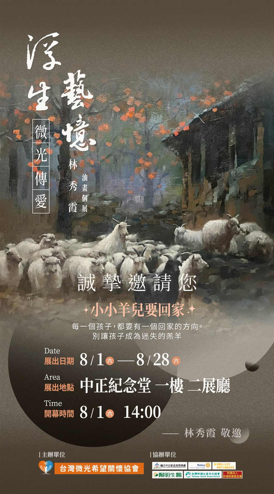

「浮生藝憶・微光傳愛」林秀霞油畫個展
小小羊兒要回家——每一個孩子，都要有一個回家的方向。

每一個孩子，都要有一個回家的方向。
別讓孩子成為迷失的羔羊。
台灣微光希望關懷協會理事長林秀霞，將於 2026 年 8 月 1 日至 8 月 28 日在國立中正紀念堂一樓二展廳，舉辦「浮生藝憶・微光傳愛」油畫個展。
展覽以〈小小羊兒要回家〉為主題。海報上的這句話，也說明了協會的初衷：每一個孩子，都要有一個回家的方向。
這是協會成立後第一次主辦的大型展覽。林秀霞理事長習畫多年，過去曾多次舉辦個展，並將義賣所得投入公益；這次展覽希望讓更多人認識協會正在做的兒少陪伴工作。
展覽資訊
| 展覽名稱 | 「浮生藝憶・微光傳愛」林秀霞油畫個展 |
|---|---|
| 展出日期 | 2026 年 8 月 1 日（六）至 8 月 28 日 |
| 開幕典禮 | 8 月 1 日（六）下午 2:00–4:00，貴賓報到自下午 1:30 起 |
| 典禮主持 | 阿Ken |
| 展出地點 | 國立中正紀念堂 一樓 二展廳（台北市中正區中山南路 21 號） |
| 交通方式 | 捷運淡水信義線／松山新店線「中正紀念堂站」5 號出口 |
| 主辦單位 | 台灣微光希望關懷協會 |
| 協辦單位 | 國立中正紀念堂管理處、台北永福扶輪社、陽明生醫、台灣好德公益文化協會、永續慈善基金會 等 |
開幕典禮流程
開幕典禮這次不只有剪綵和致詞。從芭蕾舞劇開場到專題論壇，整場活動都圍繞著同一件事：讓更多人關注受虐兒的議題。
-
貴賓報到
簽到、媒體拍照與貴賓交流。現場大螢幕播放「林秀霞創作歷程」、「台灣微光希望關懷協會介紹」與受虐兒公益影片。
-
開場表演：羅德芭蕾舞團《天鵝湖》
以舞劇呈現受虐兒的處境，為整場活動揭開序幕。
-
主持人開場、理事長致詞
主持人阿Ken介紹舞團與舞劇的意涵，並說明這次展覽是一場社會倡議，希望喚起大眾對受虐兒議題的關注。接著由理事長、也是本次個展畫家林秀霞致詞。
- 貴賓致詞
-
萬人點燈、萬人簽名、大合照
邀請現場來賓一起點燈、簽名，為受虐兒發聲。
-
專題論壇
與談人陣容見下方介紹。
-
媒體採訪、作品導覽與茶點交流
林秀霞老師親自導覽作品，歡迎貴賓自由參觀、交流。
專題論壇與談人
論壇聚焦受虐兒與脆弱家庭的支持，邀請醫療、藝術治療、社工與宗教界的實務工作者對談：
- 丘彥南｜精神科醫師
- 楊涵芳｜藝術治療師（心理諮商、藝術治療）
- 林瑞敏｜瑞芳愛鄰協會理事長，長期投入脆弱家庭服務
- 林福湘｜社工師（愛鄰課後服務）
- 宗教界代表｜得榮文教基金會（服務青少年之教會團體）
- 林秀霞｜台灣微光希望關懷協會理事長（主辦單位）
歡迎蒞臨參觀，也歡迎轉知親友。展覽相關問題請洽 02-2523-0077。